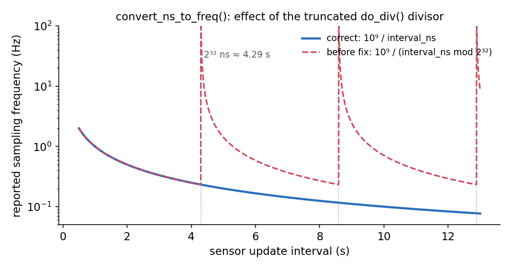

flowchart LR
A[Prepare<br/>and check] --> B[Send to<br/>the list]
B --> C{Review}
C -- v2 --> C
C -- tags --> D[Maintainer<br/>tree]
D --> E[linux-next]
E --> F[Mainline]
D -. stable .-> G[Stable<br/>kernels]
Nine patches, many reviewers: notes from the Linux Kernel Mentorship
linux-kernel
lfx
iio
open-source
A technical account of my LFX Linux Kernel Bug Fixing Mentorship: how bugs in the IIO and networking subsystems were found, how review on the mailing list shaped each fix, and what working with kernel maintainers taught me.
Kernel developers have a reputation for being hard on newcomers. My experience was the opposite. Over the LFX Linux Kernel Bug Fixing Mentorship with Shuah Khan, nine of my patches were applied upstream: eight in the Industrial I/O (IIO) subsystem and one in the sfc network driver. None of them reached that state as I first wrote them. Each was improved by someone on the mailing list: a maintainer, a reviewer, or an automated test robot. This post is an account of that collaboration as much as of the bugs themselves.
Background: how a patch travels
The Linux kernel has no pull requests. A change is a plain-text email, sent with git send-email to the maintainers and lists that scripts/get_maintainer.pl names for the files it touches. Reviewers reply inline, and they show approval with tags such as Reviewed-by: and Acked-by:. A subsystem maintainer then applies the patch to their own tree. From there it flows into linux-next, then into Linus Torvalds’ mainline tree during a merge window, and, if it is marked for stable, into the stable kernels people already run.
IIO, maintained by Jonathan Cameron in iio.git, has two main branches. Fixes go to fixes-togreg and reach mainline in the current release cycle. Everything else goes to togreg, through a testing branch, and waits for the next merge window. This distinction matters later in the story.
Learning the process the hard way
My first attempt, in June 2025, did not reach any maintainer: I sent it as an attachment, only to my mentor. A second round, in June 2026, targeted the sm750fb staging driver. I had based it on an old tree, so I was renaming variables that other contributors had already renamed. The kernel test robot reported build failures, and my duplicate resubmissions earned a polite request to stop.
These were useful failures. They set the method I used for every later patch:
- Start from today’s linux-next or the subsystem tree, never a stale checkout.
- Build each changed object with
make W=1, runscripts/checkpatch.pl --strict, and, for documentation,scripts/kernel-doc -Wallover the whole driver. - Search the list archives first. I kept local git mirrors of the linux-iio and netdev archives from lore.kernel.org, so I could check whether someone was already working on the same code.
- Send each version once, with a changelog under the
---line.
Finding bugs worth fixing
Most of my search time went into static analysis: Smatch, Coccinelle, W=1 builds and kernel-doc. Most of what these tools report is not a bug. I went through Smatch’s 114 warnings on net/ and about 20 in IIO. In every case I checked, the code was correct: a signedness warning caused by a __be16 enum, a pointer that a helper function initialised where Smatch could not see it, and similar. Telling a false positive from a real defect, and dropping it quickly, turned out to be one of the most important skills of the mentorship.
Three real bugs came out of this search. Each of them also taught me something about how C code can hide errors.
Silent truncation in scmi_sensors
The kernel test robot had reported do_div() warnings in the SCMI sensor driver, and Geert Uytterhoeven had noted on the list that most do_div() uses in that driver were broken. Nobody had fixed them.
do_div(n, base) divides a 64-bit dividend by a 32-bit divisor: base is stored in a uint32_t on every architecture. The driver passed 64-bit divisors in seven calls. One of them converts a sensor’s update interval to a sampling frequency:
static void convert_ns_to_freq(u64 interval_ns, u64 *hz, u64 *uhz)
{
u64 rem, freq;
freq = NSEC_PER_SEC;
rem = do_div(freq, interval_ns); /* interval_ns silently truncated to 32 bits */
*hz = freq;
*uhz = rem * 1000000UL;
do_div(*uhz, interval_ns);
}For any interval of 2³² ns (about 4.29 s) or longer, the divisor wraps around. Figure 2 shows the result. The reported frequency is correct up to 4.29 s, then jumps by orders of magnitude, and an interval that is an exact multiple of 2³² ns would divide by zero.

convert_ns_to_freq() as a function of the sensor update interval. Before the fix, the divisor is reduced modulo 2³², so the result is wrong past 4.29 s and diverges near every multiple of 2³² ns (dotted lines).
The fix replaces each call with div64_u64() or div64_u64_rem(), which take a 64-bit divisor. The functions are not drop-in replacements, though. do_div() modifies its first argument in place and returns the remainder, while div64_u64() returns the quotient. I rewrote each call site separately so it kept its meaning:
- freq = NSEC_PER_SEC;
- rem = do_div(freq, interval_ns);
- *hz = freq;
- *uhz = rem * 1000000UL;
- do_div(*uhz, interval_ns);
+ *hz = div64_u64_rem(HZ_PER_GHZ, interval_ns, &rem);
+ *uhz = div64_u64(rem * MICROHZ_PER_HZ, interval_ns);Andy Shevchenko’s review of v1 pointed out over-long lines, asked for the named unit constants (HZ_PER_GHZ, MICROHZ_PER_HZ) instead of bare literals, and corrected the format of my Assisted-by: tag. The v2 got his Reviewed-by:, and Jonathan applied it to fixes-togreg with Cc: stable (lore, commit).
Three axes, one calibration value
The InvenSense MPU-9250 combines an accelerometer and gyroscope with an AK8963 magnetometer. Each magnetometer axis has its own factory sensitivity adjustment, called ASAX, ASAY and ASAZ in the datasheet. The driver computes one scale per axis into magn_raw_to_gauss[] and reads it back with chan->address as the index. But the channel macro never set .address, so it was 0 on all three channels. The Y and Z axes were scaled with the X axis’s calibration, and had been since 2019.
I wanted to be certain before reporting this, so I inspected the compiled channel tables with gdb rather than reasoning from the source alone:
| Channel | .address before |
.address after |
Calibration used before fix |
|---|---|---|---|
in_magn_x |
0 | 0 | ASAX (correct) |
in_magn_y |
0 | 1 | ASAX (wrong) |
in_magn_z |
0 | 2 | ASAX (wrong) |
The fix is a single line in the macro, .address = (_chan2) - IIO_MOD_X, which maps X, Y and Z to 0, 1 and 2 in the same order inv_magn_init() fills the array (lore, commit).
Positional initialisers and swapped startup times
While reading the same driver, I noticed a quieter problem. The hardware description struct declares the startup times in one order:
struct inv_mpu6050_hw {
...
struct {
unsigned int accel;
unsigned int gyro;
} startup_time;
};But every entry of the hw_info[] table filled them in the opposite order:
- .startup_time = {INV_MPU6500_GYRO_STARTUP_TIME, INV_MPU6500_ACCEL_STARTUP_TIME},
+ .startup_time = {
+ .accel = INV_MPU6500_ACCEL_STARTUP_TIME,
+ .gyro = INV_MPU6500_GYRO_STARTUP_TIME,
+ },C positional initialisers assign values by position, not by meaning, so the compiler had no reason to complain. The accelerometer and gyroscope startup times had been swapped for all 19 supported chips since 2021. Using designated initialisers fixes the bug and makes the same mistake impossible to repeat.
Jean-Baptiste Maneyrol, the driver’s maintainer at TDK InvenSense, acked both inv_mpu6050 fixes. Jonathan applied them to fixes-togreg, marked for stable (lore, commit).
Documentation, and why reviewers ask for more
The remaining patches fixed kernel-doc comments that no longer matched the code: members that had been renamed or removed in ad5686, inv_icm42600, inv_mpu6050, and sfc. These sound minor, but the review of these patches taught me the most about how maintainers think.
When I sent a one-line fix for a stale @vdd_supply comment in inv_icm42600, Andy gave it a Reviewed-by: and asked whether it was the only kernel-doc problem in the driver. It was not. My v2 became a two-patch series that left the driver clean under kernel-doc -Wall. From then on I checked the whole driver before sending any documentation patch, and the inv_mpu6050 patch fixed all 13 of its warnings at once.
On netdev, Simon Horman noticed that a member next to the ones I had fixed in sfc was also undocumented. Looking closer, it was not used anywhere, so v2 removed it and two other unused members. That patch got Reviewed-by: tags from Alex Austin at AMD and from Simon, and Paolo Abeni applied it to net-next (lore, commit). It was my first patch applied anywhere in the kernel.
Working with the maintainers
I was nervous before every early submission. The names on the To: line were names I knew from MAINTAINERS files and commit logs, and every reply would be public and archived. That nervousness faded as the replies came in, because they were generous and precise.
Jonathan made me feel welcome from the start. When Jean-Baptiste called the startup-time fix “another good catch”, Jonathan replied “Absolutely” and applied it. He then suggested a follow-up, using named initialisers for the neighbouring .temp field, and added “No problem if you have moved onto other things!” It was a small sentence, but it made me feel like a contributor rather than a student.
He was also careful in ways that taught me about stewardship. On the cros_ec_sensors patch he wrote that the driver “tends to be well maintained”, so he would wait for its own maintainers before applying it. Tzung-Bi Shih, a ChromeOS EC maintainer, reviewed it the next morning, and Jonathan applied it that evening. When Joshua Crofts asked me for a Fixes: tag on that patch, I traced the code back to the commit that introduced it and posted the tag in the thread. Andy replied that there was no need to resend, because b4 collects tags from the whole thread. These are small things, but each of them is part of how the community works.
The best moment was a run of emails late on 17 October. Within about twenty minutes, “Applied to the togreg branch of iio.git” and “Applied to the fixes-togreg branch” arrived for seven of my patches. I was thrilled. After the earlier failures, seeing them applied one after another was the high point of the mentorship.
gantt
dateFormat YYYY-MM-DD
axisFormat %d %b
section net-next
sfc kernel-doc (v1, v2) :done, 2026-10-03, 2026-10-13
applied :milestone, 2026-10-13, 0d
section iio fixes-togreg
scmi_sensors (v1, v2) :done, 2026-10-03, 2026-10-17
mpu6050 magnetometer scale :done, 2026-10-11, 2026-10-17
mpu6050 startup times :done, 2026-10-11, 2026-10-17
cros_ec CALIBSCALE :done, 2026-10-11, 2026-10-18
applied :milestone, 2026-10-17, 0d
section iio togreg
icm42600 kernel-doc (v1, v2) :done, 2026-10-03, 2026-10-17
ad5686 kernel-doc :done, 2026-10-11, 2026-10-17
mpu6050 kernel-doc :done, 2026-10-11, 2026-10-17
section in review
mpu6050 named .temp :active, 2026-10-18, 2026-10-22
A lesson in dependencies
The follow-up Jonathan suggested taught me one more thing. I based it on fixes-togreg, because it edits lines that the startup-time fix had just changed. Joshua tried it on the development branch and replied that it did not apply. The patch was fine, but its context lines only exist where the startup-time fix exists. I explained this on the list. The lesson is to always state a patch’s base branch and dependencies below the --- line, especially when it builds on a fix that has not yet reached the development branch.
On using an AI assistant
I used an LLM-based assistant for analysis and to check my reasoning, and I disclosed it with an Assisted-by: tag on each patch, as the kernel’s policy on coding assistants requires. That policy is clear that responsibility stays with the human: I signed off, built and tested every patch, and answered every review myself. The guidance on the tag’s format changed during the mentorship. Andy corrected my early format, and Jonathan later dropped the tag from one patch because the guidance had changed again. It is a policy still being worked out, and the community is working it out in public.
Results
| Patch | Tree | Reviewed / acked by | Links |
|---|---|---|---|
| scmi_sensors: fix truncating 64-bit divisions | iio fixes, stable | Andy Shevchenko | lore · commit |
| inv_mpu6050: fix magnetometer scale of Y and Z axes | iio fixes, stable | Jean-Baptiste Maneyrol | lore · commit |
| inv_mpu6050: fix swapped accel and gyro startup times | iio fixes, stable | Jean-Baptiste Maneyrol | lore · commit |
| cros_ec_sensors: sensor_scale for CALIBSCALE | iio fixes | Joshua Crofts, Tzung-Bi Shih | lore · commit |
| sfc: fix stale kernel-doc in net_driver.h | net-next | Alex Austin, Simon Horman | lore · commit |
| inv_icm42600: fix kernel-doc warnings (2 patches) | iio togreg | Andy Shevchenko, Joshua Crofts | lore |
| ad5686: fix channels member name in kernel-doc | iio togreg | Maxwell Doose, Nuno Sá | lore |
| inv_mpu6050: fix kernel-doc warnings | iio togreg | Joshua Crofts | lore |
For the next mentee
- Read
submitting-patches.rstbefore your first patch, and the subsystem’s maintainer notes, such asmaintainer-netdev.rst, before your first patch to that subsystem. - Look for code that is wrong, not only code that warns. Tracing a bug to the commit that introduced it, with a
Fixes:tag, makes a patch much more useful to maintainers. - When a reviewer asks for more than you sent, they are usually right. Treat it as the start of a collaboration.
- Be patient. Maintainers batch their work, and my patches waited one to two weeks.
Acknowledgements
I am grateful to Shuah Khan for running the mentorship, and to everyone who reviewed my work: Jonathan Cameron, Andy Shevchenko, Jean-Baptiste Maneyrol, Joshua Crofts, Nuno Sá, Maxwell Doose, Tzung-Bi Shih, Simon Horman, Alex Austin, Paolo Abeni and Geert Uytterhoeven. Each of these patches is better because of them.